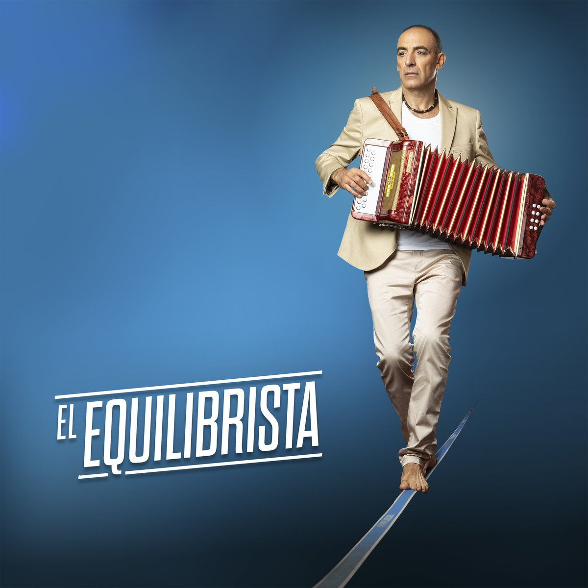
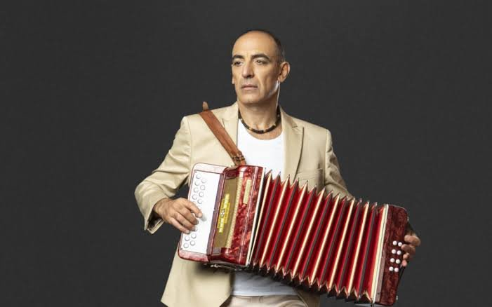
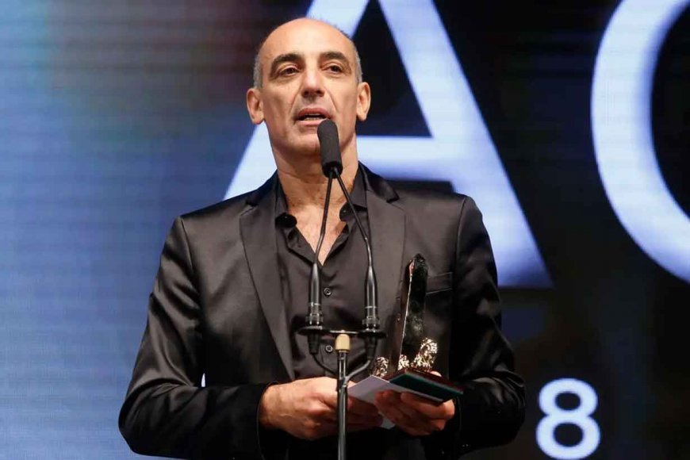
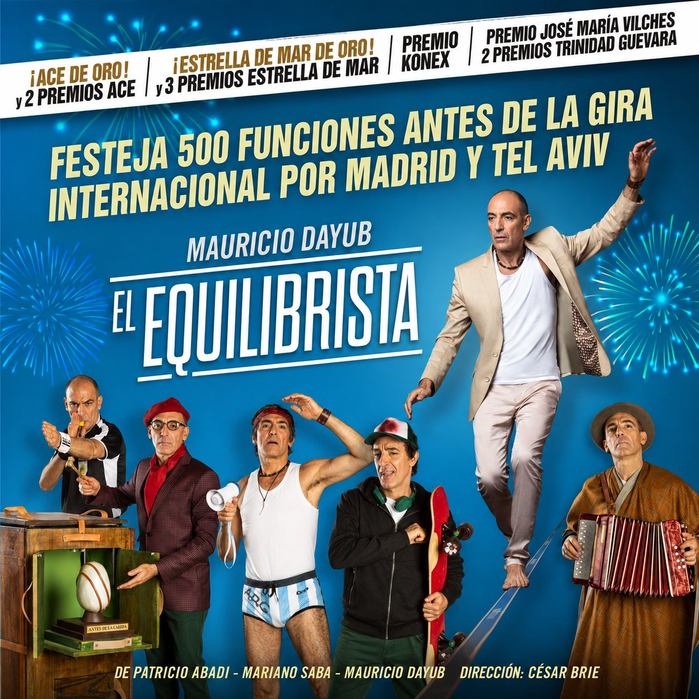
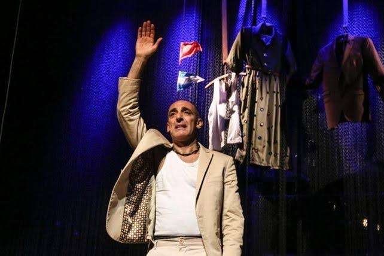
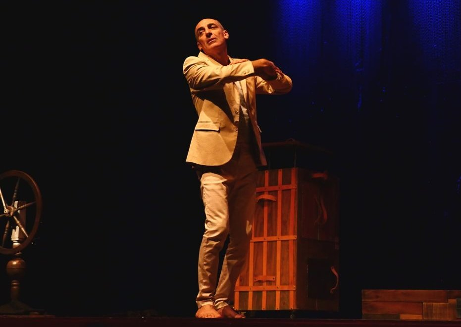
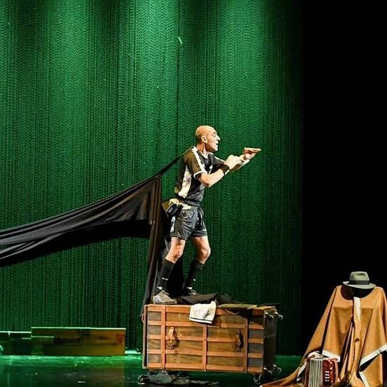

El Equilibrista
Moreno 2994, Saladillo, Provincia de Buenos Aires, Argentina
Sinopsis
Mi abuelo tocaba el acordeón junto a una caja que decía "Frágil". Una caja similar a la que mi padre usaba para guardar las obras de arte, que remataba. Mi abuela soñaba con cajas que no abría. Un día le conté que yo también soñaba con una. Me aconsejó que no la abriera. Cuando me animé, la abrí, y entendí a mi papá. Luego abrí otra, y comprendí a mis tíos. Hasta que en la última, me encontré a mí. Mi abuelo había atravesado el mar con su acordeón, oculto en esa caja que decía "Frágil". El mismo mar que tuve que atravesar yo, para saber de dónde venía. Ahora entiendo por qué.
Detalle
Cuando llegué a ser adulto me di cuenta de que estaba en un problema: no me gusta la vida de los adultos. No me gustan la resignación, los cumplidos, los bancos, ni los remedios. Me gustan la ilusión, la euforia, la expectativa, la posibilidad. En eso ando. Por eso este espectáculo.
Galería






Mauricio Dayub
Mauricio Dayub es un prestigioso actor de la Argentina y se ha destacado con personajes en televisión, cine y teatro. En TV realizó programas como Cosecharás tu siembra, La elegida, Apasionada, Amigovios, Como pan caliente, Calientes, Primicias, Tiempo final, Amor en custodia, Amo de casa, Consentidos, Un año para recordar y Hernán. En 2014 tiene un personaje muy divertido en Guapas, la nueva ficción de El Trece.
En cine fue parte de Vivir a los 17, El camino del sur, Vivir mata, El censor, Ipanema, Topos, La segunda muerte, Domingo de Ramos, La pelea de mi vida y Corazón de León, entre otras. En teatro brilla en el éxito "Toc toc", pero previamente estuvo en Tres hermanas, Compañero del alma, Adentro, 4 jinetes apocalípticos y La negación.